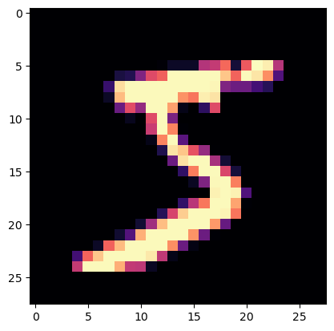
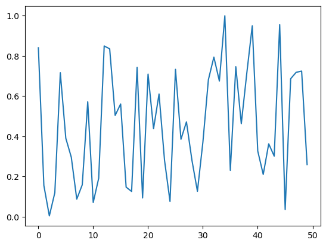
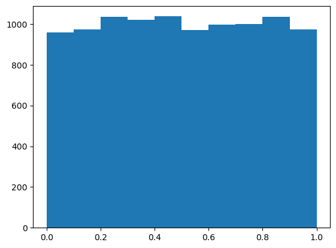

from urllib.request import urlretrieve
if not path_gz.exists(): urlretrieve(MNIST_URL, path_gz)This is not my content it’s a part of Fastai’s From Deep Learning Foundations to Stable Diffusion course. I add some notes for me to understand better thats all. For the source check Fastai course page.
Matrix multiplication from foundations
The foundations we’ll assume throughout this course are:
- Python
- matplotlib
- The Python standard library
- Jupyter notebooks and nbdev
from pathlib import Path
import pickle, gzip, math, os, time, shutil, matplotlib as mpl, matplotlib.pyplot as pltGet data
MNIST_URL='https://github.com/mnielsen/neural-networks-and-deep-learning/blob/master/data/mnist.pkl.gz?raw=true'
path_data = Path('data')
path_data.mkdir(exist_ok=True)
path_gz = path_data/'mnist.pkl.gz'urlretrieve - (read the docs!)
!ls -l datatotal 16656
-rw-rw-r-- 1 niyazi niyazi 17051982 Şub 5 11:17 mnist.pkl.gzwith gzip.open(path_gz, 'rb') as f: ((x_train, y_train), (x_valid, y_valid), _) = pickle.load(f, encoding='latin-1')lst1 = list(x_train[0])
vals = lst1[200:210]
vals[0.0,
0.0,
0.0,
0.19140625,
0.9296875,
0.98828125,
0.98828125,
0.98828125,
0.98828125,
0.98828125]def chunks(x, sz):
for i in range(0, len(x), sz): yield x[i:i+sz]list(chunks(vals, 5))[[0.0, 0.0, 0.0, 0.19140625, 0.9296875],
[0.98828125, 0.98828125, 0.98828125, 0.98828125, 0.98828125]]
Choosing colormaps in Matplotlib
# this cahanges the colormap
mpl.rcParams['image.cmap'] = 'magma'
# mpl.pyplot == plt.imshow
mpl.pyplot.imshow(list(chunks(lst1, 28)));
from itertools import isliceit = iter(vals)
islice(it, 5)<itertools.islice>list(islice(it, 5))[0.0, 0.0, 0.0, 0.19140625, 0.9296875]list(islice(it, 5))[0.98828125, 0.98828125, 0.98828125, 0.98828125, 0.98828125]list(islice(it, 5))[]
Iter-callable usage
if a callable passed to a iter(lambda) then it runs again and again until it thit the sentinel that is [] at this time
iter(lambda: list(islice(it, 28)), [])<callable_iterator>it = iter(lst1)
img = list(iter(lambda: list(islice(it, 28)), []))plt.imshow(img);Matrix and tensor
img[20][15]0.98828125class Matrix:
def __init__(self, xs): self.xs = xs
def __getitem__(self, idxs): return self.xs[idxs[0]][idxs[1]]m = Matrix(img)
m[20,15]0.98828125import torch
from torch import tensortensor([1,2,3])tensor([1, 2, 3])x_train,y_train,x_valid,y_valid = map(tensor, (x_train,y_train,x_valid,y_valid))
x_train.shapetorch.Size([50000, 784])x_train.type()'torch.FloatTensor'imgs = x_train.reshape((-1,28,28))
imgs.shapetorch.Size([50000, 28, 28])plt.imshow(imgs[0]);
imgs[0,20,15]tensor(0.99)n,c = x_train.shape
y_train, y_train.shape(tensor([5, 0, 4, ..., 8, 4, 8]), torch.Size([50000]))min(y_train),max(y_train)(tensor(0), tensor(9))y_train.min(), y_train.max()(tensor(0), tensor(9))Random numbers
Quantum random numbers from The Australian National University https://qrng.anu.edu.au/
CloudFlare random number generator. https://blog.cloudflare.com/randomness-101-lavarand-in-production/
Based on the Wichmann Hill algorithm used before Python 2.3.
rnd_state = None
def seed(a):
global rnd_state
a, x = divmod(a, 30268)
a, y = divmod(a, 30306)
a, z = divmod(a, 30322)
rnd_state = int(x)+1, int(y)+1, int(z)+1seed(457428938475)
rnd_state(4976, 20238, 499)def rand():
global rnd_state
x, y, z = rnd_state
x = (171 * x) % 30269
y = (172 * y) % 30307
z = (170 * z) % 30323
rnd_state = x,y,z
return (x/30269 + y/30307 + z/30323) % 1.0rand(),rand(),rand()(0.7645251082582081, 0.7920889799553945, 0.06912886811267205)if os.fork(): print(f'In parent: {rand()}')
else:
print(f'In child: {rand()}')
os._exit(os.EX_OK)In parent: 0.9559050644103264
In child: 0.9559050644103264if os.fork(): print(f'In parent: {torch.rand(1)}')
else:
print(f'In child: {torch.rand(1)}')
os._exit(os.EX_OK)In parent: tensor([0.93])
In child: tensor([0.93])plt.plot([rand() for _ in range(50)]);
plt.hist([rand() for _ in range(10000)]);
%timeit -n 10 list(chunks([rand() for _ in range(7840)], 10))1.55 ms ± 8.41 µs per loop (mean ± std. dev. of 7 runs, 10 loops each)%timeit -n 10 torch.randn(784,10)26.9 µs ± 13.2 µs per loop (mean ± std. dev. of 7 runs, 10 loops each)Matrix multiplication
torch.manual_seed(1)
weights = torch.randn(784,10)
bias = torch.zeros(10)m1 = x_valid[:5]
m2 = weightsm1.shape,m2.shape(torch.Size([5, 784]), torch.Size([784, 10]))ar,ac = m1.shape # n_rows * n_cols
br,bc = m2.shape
(ar,ac),(br,bc)((5, 784), (784, 10))t1 = torch.zeros(ar, bc)
t1.shapetorch.Size([5, 10])for i in range(ar): # 5
for j in range(bc): # 10
for k in range(ac): # 784
t1[i,j] += m1[i,k] * m2[k,j]
For a better visibility change the linewidth from 80 to 140
torch.set_printoptions(precision=2, linewidth=80, sci_mode=False)
t1tensor([[-10.94, -0.68, -7.00, -4.01, -2.09, -3.36, 3.91, -3.44, -11.47,
-2.12],
[ 14.54, 6.00, 2.89, -4.08, 6.59, -14.74, -9.28, 2.16, -15.28,
-2.68],
[ 2.22, -3.22, -4.80, -6.05, 14.17, -8.98, -4.79, -5.44, -20.68,
13.57],
[ -6.71, 8.90, -7.46, -7.90, 2.70, -4.73, -11.03, -12.98, -6.44,
3.64],
[ -2.44, -6.40, -2.40, -9.04, 11.18, -5.77, -8.92, -3.79, -8.98,
5.28]])t1.shapetorch.Size([5, 10])
The same content with 140 characters
torch.set_printoptions(precision=2, linewidth=140, sci_mode=False)
t1tensor([[-10.94, -0.68, -7.00, -4.01, -2.09, -3.36, 3.91, -3.44, -11.47, -2.12],
[ 14.54, 6.00, 2.89, -4.08, 6.59, -14.74, -9.28, 2.16, -15.28, -2.68],
[ 2.22, -3.22, -4.80, -6.05, 14.17, -8.98, -4.79, -5.44, -20.68, 13.57],
[ -6.71, 8.90, -7.46, -7.90, 2.70, -4.73, -11.03, -12.98, -6.44, 3.64],
[ -2.44, -6.40, -2.40, -9.04, 11.18, -5.77, -8.92, -3.79, -8.98, 5.28]])import numpy as np
np.set_printoptions(precision=2, linewidth=140)def matmul(a,b):
(ar,ac),(br,bc) = a.shape,b.shape
c = torch.zeros(ar, bc)
for i in range(ar):
for j in range(bc):
for k in range(ac): c[i,j] += a[i,k] * b[k,j]
return c%time _=matmul(m1, m2)CPU times: user 227 ms, sys: 0 ns, total: 227 ms
Wall time: 227 msar*bc*ac39200Numba
from numba import njit@njit
def dot(a,b):
res = 0.
for i in range(len(a)): res+=a[i]*b[i]
return resfrom numpy import array%time dot(array([1.,2,3]),array([2.,3,4]))CPU times: user 47.3 ms, sys: 3.69 ms, total: 50.9 ms
Wall time: 50.8 ms20.0%time dot(array([1.,2,3]),array([2.,3,4]))CPU times: user 16 µs, sys: 0 ns, total: 16 µs
Wall time: 18.1 µs20.0Now only two of our loops are running in Python, not three:
def matmul(a,b):
(ar,ac),(br,bc) = a.shape,b.shape
c = torch.zeros(ar, bc)
for i in range(ar):
for j in range(bc): c[i,j] = dot(a[i,:], b[:,j])
return cm1a,m2a = m1.numpy(),m2.numpy()from fastcore.test import *test_close(t1,matmul(m1a, m2a))%timeit -n 50 matmul(m1a,m2a)148 µs ± 14.6 µs per loop (mean ± std. dev. of 7 runs, 50 loops each)Elementwise ops
nk allways right to left no operator precedence
a = tensor([10., 6, -4])
b = tensor([2., 8, 7])
a,b(tensor([10., 6., -4.]), tensor([2., 8., 7.]))a + btensor([12., 14., 3.])(a < b).float().mean()tensor(0.67)m = tensor([[1., 2, 3], [4,5,6], [7,8,9]]); mtensor([[1., 2., 3.],
[4., 5., 6.],
[7., 8., 9.]])Frobenius norm:
\[\| A \|_F = \left( \sum_{i,j=1}^n | a_{ij} |^2 \right)^{1/2}\]
Hint: you don’t normally need to write equations in LaTeX yourself, instead, you can click ‘edit’ in Wikipedia and copy the LaTeX from there (which is what I did for the above equation). Or on arxiv.org, click “Download: Other formats” in the top right, then “Download source”; rename the downloaded file to end in .tgz if it doesn’t already, and you should find the source there, including the equations to copy and paste. This is the source LaTeX that I pasted to render the equation above:
$$\| A \|_F = \left( \sum_{i,j=1}^n | a_{ij} |^2 \right)^{1/2}$$sf = (m*m).sum()
sftensor(285.)sf.sqrt()tensor(16.88)m[2,:],m[:,2](tensor([7., 8., 9.]), tensor([3., 6., 9.]))m[2]tensor([7., 8., 9.])def matmul(a,b):
(ar,ac),(br,bc) = a.shape,b.shape
c = torch.zeros(ar, bc)
for i in range(ar):
for j in range(bc): c[i,j] = (a[i,:] * b[:,j]).sum()
return ctest_close(t1,matmul(m1, m2))%timeit -n 50 _=matmul(m1, m2)279 µs ± 2.53 µs per loop (mean ± std. dev. of 7 runs, 50 loops each)def matmul(a,b):
(ar,ac),(br,bc) = a.shape,b.shape
c = torch.zeros(ar, bc)
for i in range(ar):
for j in range(bc): c[i,j] = torch.dot(a[i,:], b[:,j])
return ctest_close(t1,matmul(m1, m2))%timeit -n 50 _=matmul(m1, m2)236 µs ± 3.12 µs per loop (mean ± std. dev. of 7 runs, 50 loops each)Broadcasting
The term broadcasting describes how arrays with different shapes are treated during arithmetic operations.
From the Numpy Documentation:
The term broadcasting describes how numpy treats arrays with
different shapes during arithmetic operations. Subject to certain
constraints, the smaller array is “broadcast” across the larger
array so that they have compatible shapes. Broadcasting provides a
means of vectorizing array operations so that looping occurs in C
instead of Python. It does this without making needless copies of
data and usually leads to efficient algorithm implementations.In addition to the efficiency of broadcasting, it allows developers to write less code, which typically leads to fewer errors.
This section was adapted from Chapter 4 of the fast.ai Computational Linear Algebra course.
Broadcasting with a scalar
atensor([10., 6., -4.])a > 0tensor([ True, True, False])How are we able to do a > 0? 0 is being broadcast to have the same dimensions as a.
For instance you can normalize our dataset by subtracting the mean (a scalar) from the entire data set (a matrix) and dividing by the standard deviation (another scalar), using broadcasting.
Other examples of broadcasting with a scalar:
a + 1tensor([11., 7., -3.])mtensor([[1., 2., 3.],
[4., 5., 6.],
[7., 8., 9.]])2*mtensor([[ 2., 4., 6.],
[ 8., 10., 12.],
[14., 16., 18.]])Broadcasting a vector to a matrix
Although broadcasting a scalar is an idea that dates back to APL, the more powerful idea of broadcasting across higher rank tensors comes from a little known language called Yorick.
We can also broadcast a vector to a matrix:
c = tensor([10.,20,30]); ctensor([10., 20., 30.])mtensor([[1., 2., 3.],
[4., 5., 6.],
[7., 8., 9.]])m.shape,c.shape(torch.Size([3, 3]), torch.Size([3]))m + ctensor([[11., 22., 33.],
[14., 25., 36.],
[17., 28., 39.]])c + mtensor([[11., 22., 33.],
[14., 25., 36.],
[17., 28., 39.]])t = c.expand_as(m)ttensor([[10., 20., 30.],
[10., 20., 30.],
[10., 20., 30.]])m + ttensor([[11., 22., 33.],
[14., 25., 36.],
[17., 28., 39.]])We don’t really copy the rows, but it looks as if we did. In fact, the rows are given a stride of 0.
t.storage() 10.0
20.0
30.0
[torch.storage.TypedStorage(dtype=torch.float32, device=cpu) of size 3]t.stride(), t.shape((0, 1), torch.Size([3, 3]))You can index with the special value [None] or use unsqueeze() to convert a 1-dimensional array into a 2-dimensional array (although one of those dimensions has value 1).
c.shapetorch.Size([3])c.unsqueeze(0), c[None, :](tensor([[10., 20., 30.]]), tensor([[10., 20., 30.]]))c.shape, c.unsqueeze(0).shape(torch.Size([3]), torch.Size([1, 3]))c.unsqueeze(1), c[:, None](tensor([[10.],
[20.],
[30.]]),
tensor([[10.],
[20.],
[30.]]))c.shape, c.unsqueeze(1).shape(torch.Size([3]), torch.Size([3, 1]))You can always skip trailling ‘:’s. And’…’ means ‘all preceding dimensions’
c[None].shape,c[...,None].shape(torch.Size([1, 3]), torch.Size([3, 1]))c[:,None].expand_as(m)tensor([[10., 10., 10.],
[20., 20., 20.],
[30., 30., 30.]])m + c[:,None]tensor([[11., 12., 13.],
[24., 25., 26.],
[37., 38., 39.]])m + c[None,:]tensor([[11., 22., 33.],
[14., 25., 36.],
[17., 28., 39.]])Broadcasting Rules
c[None,:]tensor([[10., 20., 30.]])c[None,:].shapetorch.Size([1, 3])c[:,None]tensor([[10.],
[20.],
[30.]])c[:,None].shapetorch.Size([3, 1])c[None,:] * c[:,None]tensor([[100., 200., 300.],
[200., 400., 600.],
[300., 600., 900.]])c[None] > c[:,None]tensor([[False, True, True],
[False, False, True],
[False, False, False]])m*mtensor([[ 1., 4., 9.],
[16., 25., 36.],
[49., 64., 81.]])When operating on two arrays/tensors, Numpy/PyTorch compares their shapes element-wise. It starts with the trailing dimensions, and works its way forward. Two dimensions are compatible when
- they are equal, or
- one of them is 1, in which case that dimension is broadcasted to make it the same size
Arrays do not need to have the same number of dimensions. For example, if you have a 256*256*3 array of RGB values, and you want to scale each color in the image by a different value, you can multiply the image by a one-dimensional array with 3 values. Lining up the sizes of the trailing axes of these arrays according to the broadcast rules, shows that they are compatible:
Image (3d array): 256 x 256 x 3
Scale (1d array): 3
Result (3d array): 256 x 256 x 3The numpy documentation includes several examples of what dimensions can and can not be broadcast together.
Matmul with broadcasting
digit is the first digit in the dataset
digit = m1[0]
digit.shape,m2.shape(torch.Size([784]), torch.Size([784, 10]))m2.shapetorch.Size([784, 10])digit[:,None].shapetorch.Size([784, 1])digit[:,None].expand_as(m2).shapetorch.Size([784, 10])(digit[:,None]*m2).shapetorch.Size([784, 10])def matmul(a,b):
(ar,ac),(br,bc) = a.shape,b.shape
c = torch.zeros(ar, bc)
for i in range(ar):
# c[i,j] = (a[i,:] * b[:,j]).sum() # previous version
c[i] = (a[i,:,None] * b).sum(dim=0) # broadcast version
return ctest_close(t1,matmul(m1, m2))%timeit -n 50 _=matmul(m1, m2)70.1 µs ± 1.97 µs per loop (mean ± std. dev. of 7 runs, 50 loops each)Our time has gone from ~500ms to <0.1ms, an over 5000x improvement! We can run on the whole dataset now.
tr = matmul(x_train, weights)
trtensor([[ 0.96, -2.96, -2.11, ..., -15.09, -17.69, 0.60],
[ 6.89, -0.34, 0.79, ..., -17.13, -25.36, 16.23],
[-10.18, 7.38, 4.13, ..., -6.73, -6.79, -1.58],
...,
[ 7.40, 7.64, -3.50, ..., -1.02, -16.22, 2.07],
[ 3.25, 9.52, -9.37, ..., 2.98, -19.58, -1.96],
[ 15.70, 4.12, -5.62, ..., 8.08, -12.21, 0.42]])tr.shapetorch.Size([50000, 10])%time _=matmul(x_train, weights)CPU times: user 6.59 s, sys: 200 ms, total: 6.79 s
Wall time: 663 msEinstein summation
Einstein summation (einsum) is a compact representation for combining products and sums in a general way. The key rules are:
- Repeating letters between input arrays means that values along those axes will be multiplied together.
- Omitting a letter from the output means that values along that axis will be summed.
m1.shape,m2.shape(torch.Size([5, 784]), torch.Size([784, 10]))# c[i,j] += a[i,k] * b[k,j]
# c[i,j] = (a[i,:] * b[:,j]).sum()
mr = torch.einsum('ik,kj->ikj', m1, m2)
mr.shapetorch.Size([5, 784, 10])mr.sum(1)tensor([[-10.94, -0.68, -7.00, -4.01, -2.09, -3.36, 3.91, -3.44, -11.47, -2.12],
[ 14.54, 6.00, 2.89, -4.08, 6.59, -14.74, -9.28, 2.16, -15.28, -2.68],
[ 2.22, -3.22, -4.80, -6.05, 14.17, -8.98, -4.79, -5.44, -20.68, 13.57],
[ -6.71, 8.90, -7.46, -7.90, 2.70, -4.73, -11.03, -12.98, -6.44, 3.64],
[ -2.44, -6.40, -2.40, -9.04, 11.18, -5.77, -8.92, -3.79, -8.98, 5.28]])torch.einsum('ik,kj->ij', m1, m2)tensor([[-10.94, -0.68, -7.00, -4.01, -2.09, -3.36, 3.91, -3.44, -11.47, -2.12],
[ 14.54, 6.00, 2.89, -4.08, 6.59, -14.74, -9.28, 2.16, -15.28, -2.68],
[ 2.22, -3.22, -4.80, -6.05, 14.17, -8.98, -4.79, -5.44, -20.68, 13.57],
[ -6.71, 8.90, -7.46, -7.90, 2.70, -4.73, -11.03, -12.98, -6.44, 3.64],
[ -2.44, -6.40, -2.40, -9.04, 11.18, -5.77, -8.92, -3.79, -8.98, 5.28]])def matmul(a,b): return torch.einsum('ik,kj->ij', a, b)test_close(tr, matmul(x_train, weights), eps=1e-3)%timeit -n 5 _=matmul(x_train, weights)15.1 ms ± 176 µs per loop (mean ± std. dev. of 7 runs, 5 loops each)pytorch op
We can use pytorch’s function or operator directly for matrix multiplication.
test_close(tr, x_train@weights, eps=1e-3)%timeit -n 5 _=torch.matmul(x_train, weights)15.2 ms ± 96.2 µs per loop (mean ± std. dev. of 7 runs, 5 loops each)CUDA
def matmul(grid, a,b,c):
i,j = grid
if i < c.shape[0] and j < c.shape[1]:
tmp = 0.
for k in range(a.shape[1]): tmp += a[i, k] * b[k, j]
c[i,j] = tmpres = torch.zeros(ar, bc)
matmul((0,0), m1, m2, res)
restensor([[-10.94, 0.00, 0.00, 0.00, 0.00, 0.00, 0.00, 0.00, 0.00, 0.00],
[ 0.00, 0.00, 0.00, 0.00, 0.00, 0.00, 0.00, 0.00, 0.00, 0.00],
[ 0.00, 0.00, 0.00, 0.00, 0.00, 0.00, 0.00, 0.00, 0.00, 0.00],
[ 0.00, 0.00, 0.00, 0.00, 0.00, 0.00, 0.00, 0.00, 0.00, 0.00],
[ 0.00, 0.00, 0.00, 0.00, 0.00, 0.00, 0.00, 0.00, 0.00, 0.00]])def launch_kernel(kernel, grid_x, grid_y, *args, **kwargs):
for i in range(grid_x):
for j in range(grid_y): kernel((i,j), *args, **kwargs)res = torch.zeros(ar, bc)
launch_kernel(matmul, ar, bc, m1, m2, res)
restensor([[-10.94, -0.68, -7.00, -4.01, -2.09, -3.36, 3.91, -3.44, -11.47, -2.12],
[ 14.54, 6.00, 2.89, -4.08, 6.59, -14.74, -9.28, 2.16, -15.28, -2.68],
[ 2.22, -3.22, -4.80, -6.05, 14.17, -8.98, -4.79, -5.44, -20.68, 13.57],
[ -6.71, 8.90, -7.46, -7.90, 2.70, -4.73, -11.03, -12.98, -6.44, 3.64],
[ -2.44, -6.40, -2.40, -9.04, 11.18, -5.77, -8.92, -3.79, -8.98, 5.28]])from numba import cudadef matmul(grid, a,b,c):
i,j = grid
if i < c.shape[0] and j < c.shape[1]:
tmp = 0.
for k in range(a.shape[1]): tmp += a[i, k] * b[k, j]
c[i,j] = tmp@cuda.jit
def matmul(a,b,c):
i, j = cuda.grid(2)
if i < c.shape[0] and j < c.shape[1]:
tmp = 0.
for k in range(a.shape[1]): tmp += a[i, k] * b[k, j]
c[i,j] = tmpr = np.zeros(tr.shape)
m1g,m2g,rg = map(cuda.to_device, (x_train,weights,r))r.shape(50000, 10)TPB = 16
rr,rc = r.shape
blockspergrid = (math.ceil(rr / TPB), math.ceil(rc / TPB))
blockspergrid(3125, 1)matmul[blockspergrid, (TPB,TPB)](m1g,m2g,rg)
r = rg.copy_to_host()
test_close(tr, r, eps=1e-3)%%timeit -n 10
matmul[blockspergrid, (TPB,TPB)](m1g,m2g,rg)
r = rg.copy_to_host()3.61 ms ± 708 µs per loop (mean ± std. dev. of 7 runs, 10 loops each)m1c,m2c = x_train.cuda(),weights.cuda()r=(m1c@m2c).cpu()%timeit -n 10 r=(m1c@m2c).cpu()458 µs ± 93.1 µs per loop (mean ± std. dev. of 7 runs, 10 loops each)Our broadcasting version was >500ms, and our CUDA version is around 0.5ms, which is another 1000x improvement compared to broadcasting. So our total speedup is around 5 million times!